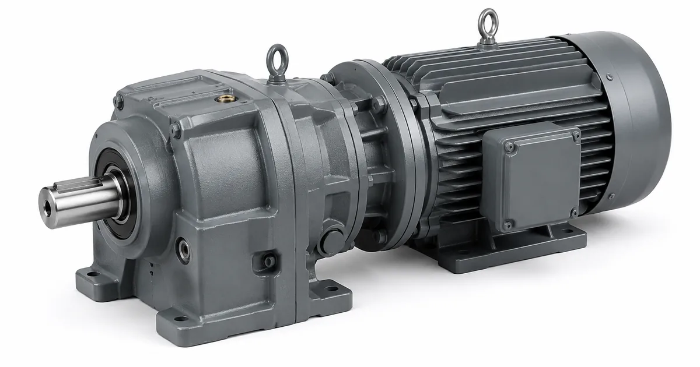

Конвейер — механизм, который ломается предсказуемо и стоит дорого в каждый час простоя. Привод головного барабана работает сменами напролёт, при этом нагружен ровно и без сюрпризов, поэтому замена здесь считается по понятной схеме. Разбираем, что именно считают, что проверяют на месте и чем эта задача отличается от любой другой замены редуктора.

Как читать этот материал. Это типовой сценарий, а не история конкретного заказчика: названий предприятий, отзывов и сумм договоров здесь нет. Мы описываем повторяющуюся инженерную задачу и порядок её решения — то, что применимо к вашему приводу.
Чем конвейерный привод отличается от всех остальных
Три особенности задают весь дальнейший расчёт.
Непрерывный режим. Дробилка работает урывками и успевает остыть, конвейер — нет. Редуктор выходит на установившуюся температуру и живёт в ней всю смену, поэтому ограничением становится не прочность зацепления, а тепловая мощность: сколько тепла корпус способен отдать в окружающий воздух. Для червячных исполнений это ограничение часто срабатывает раньше механического, и именно на нём горят подборы «по моменту».
Нагрузка ровная, но постоянная. Ударов нет, зато нет и пауз. Сервис-фактор для ленточного конвейера при работе в две смены обычно берут порядка 1,25 — меньше, чем для дробилки, но принципиально больше единицы. Пусковой момент при трогании гружёной ленты кратковременно превышает номинальный в полтора-два раза, и этот пик тоже должен укладываться в допустимый.
Насадной монтаж. Значительная часть конвейерных приводов сидит прямо на валу барабана полым валом и удерживается от проворота реактивной штангой. Здесь нет муфты, которая компенсировала бы несоосность, зато есть радиальная нагрузка от самого барабана и изгибающий момент на выходном подшипниковом узле. Считать их обязательно.
Четыре расчёта, без которых замена не сделана
| Расчёт | Исходные данные | Чем грозит пропуск |
|---|---|---|
| Момент на выходном валу с сервис-фактором | мощность и обороты двигателя, обороты барабана, режим и сменность | зацепление выхаживает несколько месяцев вместо расчётного ресурса |
| Тепловая мощность в непрерывном режиме | температура в цехе или на улице, наличие обдува, тип исполнения | перегрев масла, ускоренное старение смазки, течь по манжетам |
| Радиальная нагрузка на выходной вал | насадной монтаж или через муфту, масса полумуфты, натяжение ленты | выход подшипникового узла, биение, разбивание посадки |
| Пусковой момент и способ пуска | прямой пуск, устройство плавного пуска или частотный преобразователь | срез шпонки или трещина корпуса на трогании гружёной ленты |
Первый расчёт делают все. Второй и третий пропускают чаще всего — и именно они возвращаются рекламацией через квартал.
Насадной или на лапах: что меняется при демонтаже
Исполнение на лапах снимается просто: расцепили муфту, открутили четыре болта, вынули. Совместимость определяется межосевыми расстояниями отверстий и высотой оси вала.
Насадной снимается сложнее, и способ посадки надо знать заранее. Полый вал со шпонкой стягивается съёмником, под стяжную втулку — распускается затяжкой винтов втулки, эвольвентный шлиц требует своего съёмника. Отдельный вопрос — реактивная штанга: её точка крепления и длина плеча у нового редуктора должны совпасть или быть перенесены, иначе момент реакции уйдёт в корпус.
Бить по валу кувалдой при снятии и набивать новый узел ударами — самая дорогая экономия времени на конвейере: подшипники получают бринеллирование, которое проявится гулом через две-три недели работы.
Марка, серии на конвейерах и что проверить при замене
Шесть марок, которые чаще всего стоят на конвейерных приводах у наших заказчиков. Колонка «проверить» — то, что решает, встанет аналог ZR на место или нет.

| Марка | Серии, которые встречаются на конвейерах | Что проверить при замене |
|---|---|---|
| Boneng | Коническо-цилиндрические K303–K318 (момент 150–58 000 Н·м, мощность 0,12–200 кВт, i 4…180) и плоские F с параллельными валами. На тяжёлых линиях — промышленные H и B в 2–4 ступени. | Тип посадки полого вала: у Boneng встречаются все три варианта — шпонка, стяжная втулка и эвольвентный шлиц. Вариант определяется только при снятии, и от него зависит, нужна ли новая ответная деталь на барабане. |
| Flender | Коническо-цилиндрические B2 (04–14, 6 200–101 000 Н·м) и B3 (03–14, 3 600–113 000 Н·м), цилиндрические H2 и H3. Это привод головного барабана магистральных и карьерных конвейеров. | Буква вида вала в обозначении: H — полый со шпонкой, D — под стяжную втулку, K — шлицевой по DIN 5480, S и V — сплошной. При такой мощности ошибка в типе вала означает переделку барабана, а не переходную плиту. |
| Guomao | Коническо-цилиндрические GK37–GK157 (0,12–200 кВт, момент до 18 000 Н·м), плоские GF. Реже — червячно-цилиндрические GS на коротких транспортёрах. | Для GS проверяется тепловая мощность: червячная ступень в непрерывном режиме упирается в тепло раньше, чем в момент. Для GK ряд совпадает с европейской сеткой, поэтому геометрия сходится почти всегда. |
| KEB | Плоские насадные F0–F9 и коническо-цилиндрические K0–K9. Моменты по ряду: K0 — 58 Н·м, K4 — 745, K6 — 2 550, K8 — 7 960, K9 — 12 200 Н·м. | Буква исполнения в конце обозначения: A и B — насадное, C — фланцевое, S — полый вал под стяжную втулку, V — вал со шпонкой. У KEB это именно исполнение, а не опция, и менять его на месте нечем. |
| Siemens | Линейка SIMOGEAR: плоские FZ29–FZ189 (i 3,5…60) и FD29–FD189 (i 50…330), коническо-цилиндрические K39–K189 (150–19 500 Н·м, i 5,17…244). | Обороты на выходе: у FD и K диапазон передаточных перекрывается, и два разных исполнения дают одну и ту же скорость ленты при разном запасе по моменту. Сверять надо фактическую скорость барабана, а не каталожное i. |
| UNIT DRIVE | Плоские UD-F в исполнениях FA/FF/FAF, коническо-цилиндрические UD-K в KA/KF/KAF. На старых линиях — ГОСТ-редукторы Ц2У, Ц3У, РМ и РЦД. | У линейки UD-* сверяются исполнение и типоразмер по европейской сетке. У ГОСТ-редукторов исходный размер — межосевое расстояние (Ц2У-200, РМ-350), и подбор ведётся от него, а не от типоразмера. |
Что проверяют на монтаже и в первые часы
Четыре пункта, которые закрывают большую часть повторных обращений по конвейерным приводам.
Соосность выставляется инструментально — индикатором или лазером, а не «на глаз по линейке». Транспортная пробка меняется на сапун, иначе при нагреве давление выдавит масло через манжету. Уровень масла проверяется для фактического монтажного положения: тот же редуктор, поставленный вертикально вместо горизонтального, требует другого количества масла и другого расположения пробок. Крепёж перетягивается после первых часов под нагрузкой.
Отдельно — обкатка. Первую смену конвейер стоит пускать с неполной загрузкой ленты и слушать привод: ровный гул допустим, периодический стук — нет.
Что получает заказчик на выходе
По итогам разбора мы отдаём три вещи: типоразмер ZR с расчётом момента, передаточного числа и запаса; заключение по геометрии — встаёт ли он на существующее место и нужна ли переходная плита; срок и стоимость, рядом со стоимостью и сроком оригинала под заказ. Дальше решение за вами.
Если по геометрии однозначного совпадения нет, мы говорим это прямо, а не предлагаем «почти подходящий» вариант, который придётся дорабатывать на месте. Переходная плита — нормальное инженерное решение, но заказчик должен знать о ней до оплаты, а не после доставки.
На изделия собственного производства действует гарантия 36 месяцев, к редуктору прилагается паспорт с фактическими параметрами. Комплект документов — на странице гарантии.
Прикинуть вариант можно самостоятельно в калькуляторе подбора. Если табличка на приводе не читается, порядок обмера — в материале про подбор по габаритам, а расшифровка обозначений — на странице про шильд. Разделы каталога под конвейерные задачи: коническо-цилиндрические, цилиндрические, червячные.
Конвейер уже стоит? Пришлите на zr@zavod-red.ru фото привода в сборе, шильд двигателя, скорость ленты и диаметр барабана. По этому набору инженер считает момент и называет типоразмер ZR в тот же рабочий день.